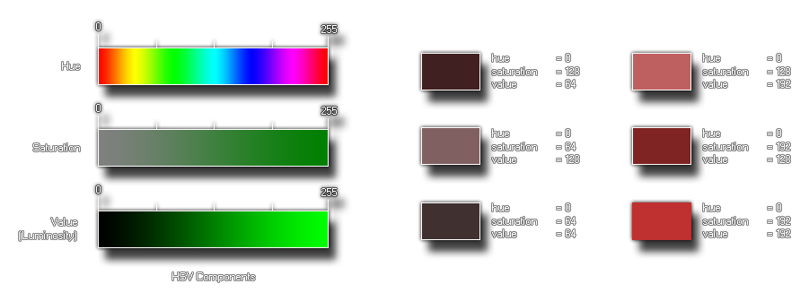

GameMaker Studio 2 fournit cette fonction (ainsi que d'autres) pour permettre à l'utilisateur de créer ses propres couleurs. Cette fonction particulière prend trois composants, la teinte, la saturation et la valeur (également appelée "luminosité") pour créer la couleur souhaitée. Ces valeurs sont comprises entre 0 et 255, vous pouvez donc créer 16 777 216 (256 * 256 * 256) couleurs avec cela! Vous pouvez voir ci-dessous une image de l'apparence de ces composants lorsqu'ils sont séparés: 
L'image de gauche représente les composants individuels de la fonction, tandis que celle de droite illustre l'impact de la modification de ces composants sur la couleur finale. Comme vous pouvez le constater, même sans changer la teinte (elle reste à 0, rouge), nous pouvons changer radicalement la couleur avec les deux autres réglages, la saturation faisant passer la teinte de couleur de gris (0) à pure (255) et avec la valeur qui la fait passer de plus sombre (0) à plus clair (255).
make_colour_hsv(hue, sat, val);
| Argument | La description |
|---|---|
| hue | La teinte de la couleur |
| sat | Comment saturé la couleur est |
| val | Comme la couleur est sombre |
Int
col = make_colour_hsv(100, 145, 255);
Le code ci-dessus utilise la fonction pour créer une couleur et stocker sa valeur dans la variable "col" pour une utilisation ultérieure.